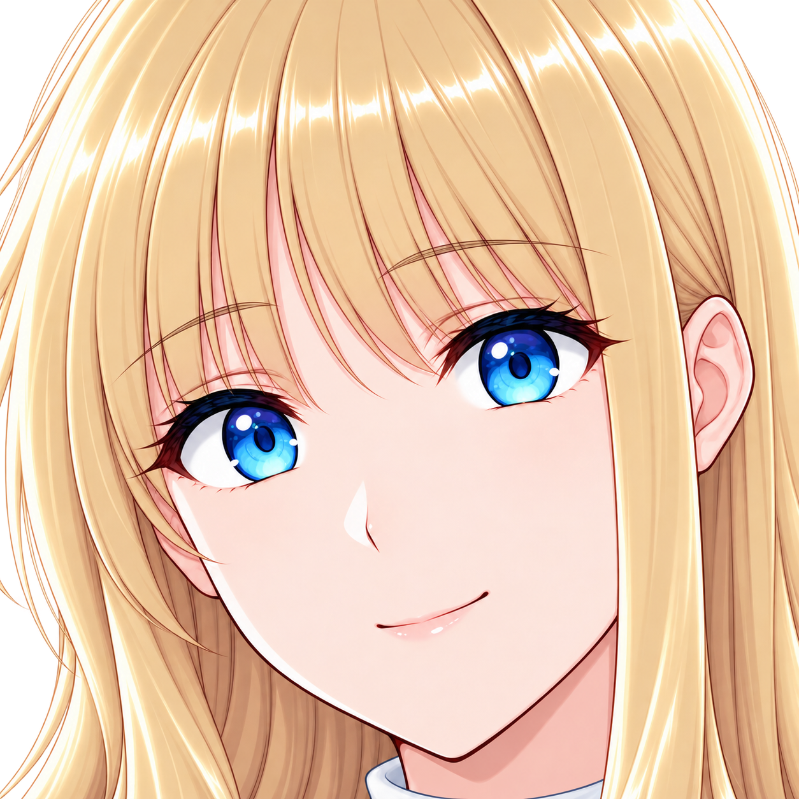

過去の試作・候補を含む資料です。採用済み、部分未達、旧版の区別は元の一覧・制作記録を参照してください。HTMLはZIPを取得した端末で開けます。GitHubでは下の画像リンクを閲覧できます。
| 画像ファイル | 開く |
|---|---|
| 00_smile_face.jpg | 画像 |
| 01_tease.jpg | 画像 |
| 01_tease_face.jpg | 画像 |
| 02_tipsy.jpg | 画像 |
| 02_tipsy_face.jpg | 画像 |
| 03_shy_round.jpg | 画像 |
| 03_shy_round_face.jpg | 画像 |
| 04_closed_smile.jpg | 画像 |
| 04_closed_smile_face.jpg | 画像 |
| 通常と顔大アップの比較.jpg | 画像 |
| 00_smile_face.png | 画像 |
| 01_tease.png | 画像 |
| 01_tease_face.png | 画像 |
| 02_tipsy.png | 画像 |
| 02_tipsy_face.png | 画像 |
| 03_shy_round.png | 画像 |
| 03_shy_round_face.png | 画像 |
| 04_closed_smile.png | 画像 |
| 04_closed_smile_face.png | 画像 |

